Golang - 使用 GVM 管理器安裝 Golang 在 Mac 上
Posted on Sat 13 July 2019 in Golang
前言
最近開始摸 Golang，而正所謂預先善其事必先利其器，當然要先把環境安裝好。在 Mac 上安裝 Golang 非常容易，可以直接透過 hombrew 或是從 Golang 官方下載安裝即可。但是這麼做會使電腦的 Golang 的版本被限縮在某一版，如果今天從 Github 上或是與其他團隊共同開發 Golang 專案時，可能會需要同時存在不同版本，因此本篇介紹使用 Golang 版本管理器 - GVM，來俐落的安裝不同的 Golang 版本。
透過 GVM 安裝並管理 Go 版本
1. 什麼是 GVM ( Go Version Management )
GVM 是一套由第三方的開源開發者們共同撰寫的 Go 語言版本管理器，能夠在系統上同時透過這套 GVM 的套件，為我們同時安裝多個不同版本的 Go ，並且可以切換要使用的版本。
這樣的管理器，如果有寫過其他語言的人一定不陌生，例如 Ruby 的 RVM，Python 的 pyenv，Node.js 的 nvm ...等等。
而在 Go 語言上也有這樣方便好用的版本管理器，安裝非常簡單，以下我們來看一下。
2. 安裝 GVM
事前安裝 gcc
在安裝 GVM 前，須先確認是否有 gcc，若沒有則須先安裝，可以透過 Homebrew 安裝：
$ brew install gcc
安裝到 Bash 中
Mac 要安裝 GVM 無法使用 Homebrew 的指令，需要輸入一串腳本指令才行：
輸入以下指令安裝：
$ bash < <(curl -s -S -L https://raw.githubusercontent.com/moovweb/gvm/master/binscripts/gvm-installer)
透過上述的安裝指令，GVM 會被安裝到 ~/.gvm 目錄下，並且自動為我們寫入以下這段指令到 bash 的用戶環境變數中：
[[ -s "/Users/<username>/.gvm/scripts/gvm" ]] && source "/Users/<username>/.gvm/scripts/gvm"
如下圖是 ~/.bash_profile：
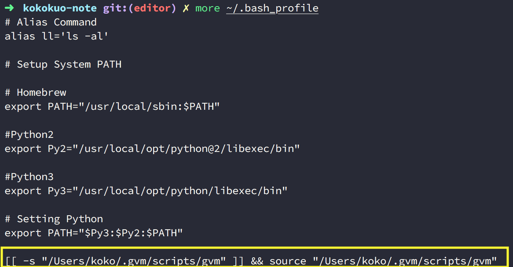
安裝到 Zsh 中
若是使用 zsh，則可以改成下載套件並設定到 zsh 中：
$ zsh < <(curl -s -S -L https://raw.githubusercontent.com/moovweb/gvm/master/binscripts/gvm-installer)
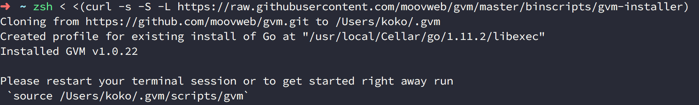
打開 ~/.zshrc 可以看到 [[ -s "/Users/<username>/.gvm/scripts/gvm" ]] && source "/Users/<username>/.gvm/scripts/gvm" ㄧ樣被寫入進去。
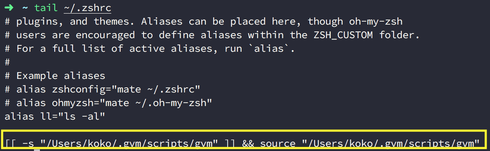
3. 啟動 GVM 安裝 Golang
在上述安裝完並檢查環境變數有指向 GVM 後，接著可以透過重新啟動 Ternimal 或是手動以 source 指令來啟動 GVＭ：
$ source /Users/<username>/.gvm/scripts/gvm
接著輸入 gvm 便會看到可以開始使用 GVM 版本管理器。
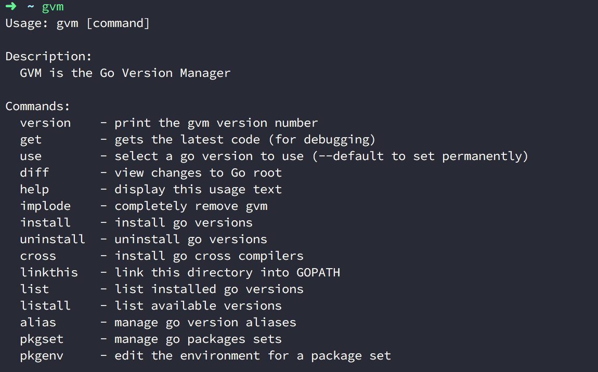
接著我們要來安裝需要的 Go 版本，在 GVM 有一些指令可以幫助我們檢查目前電腦上的 Go 版本、Go 釋出可以安裝的版本來讓我們選擇安裝：
(1.) 查看可以下載安裝的 Go 版本
透過 listall 可以查看遠端可以下載的 Go 版本：
$ gvm listall
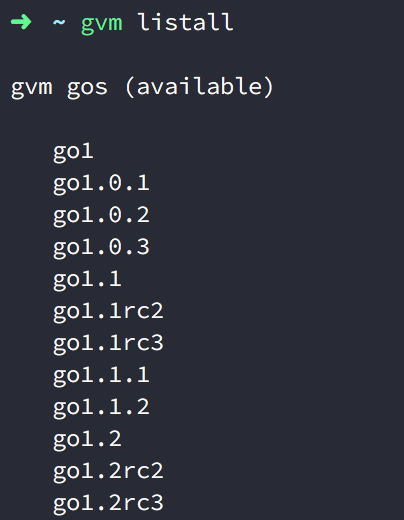
(2.) 安裝想要的版本
$ gvm install <輸入你想要安裝的版本>
其他額外的參數：
Usage: gvm install [version] [options]
-s, --source=SOURCE Install Go from specified source.
-n, --name=NAME Override the default name for this version.
-pb, --with-protobuf Install Go protocol buffers.
-b, --with-build-tools Install package build tools.
-B, --binary Only install from binary.
--prefer-binary Attempt a binary install, falling back to source.
-h, --help Display this message.
例如在這邊我安裝 1.14.3 版本：
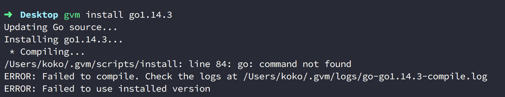
結果卻看到錯誤的訊息，而這是因為 Go 1.4 版以後在工具鏈中移除了 C 的編譯器，並改為用 Go 寫的 C 編譯器放進去的原因。
Go 1.5+ 要做編譯
以下是官方套件的介紹：
Go 1.5+ removed the C compilers from the toolchain and replaced them with one written in Go. Obviously, this creates a bootstrapping problem if you don't already have a working Go install. In order to compile Go 1.5+, make sure Go 1.4 is installed first.
因此安裝 Go 1.4 版以後的版本要改用參數 -B ，來直接安裝 binary 的版本才行：
$ gvm install [Go 版本] -B
(3.) 查看目前電腦所安裝的版本
要查看已經安裝的版本，可以透過 list 來得知所有已經安裝的版本號。
$ gvm list
如下我們便會看到了已經安裝的版本。
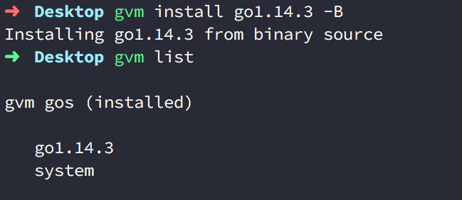
(4.) 指定使用的 Go 語言版本
如果要指定使用的版本 (或切換版本)，可以透過 use 指令來指定。
$ gvm use <已安裝要指定切換的 Go 版本>
$ gvm use go1.13.11
設定好後，我們可以透過 go version 來檢查是否找得到指定的版本：
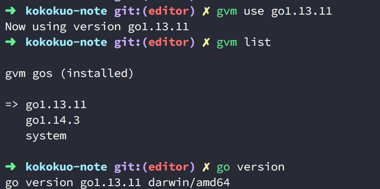
此外透過 gvm list 也可以看到目前我們所使用的版本。
但是透過 gvm use 只能針對目前這個 Shell，所以當我們開了一個 Shell 後，便會找不到剛剛設定的 Go，如下圖我開了一個新的 tty：
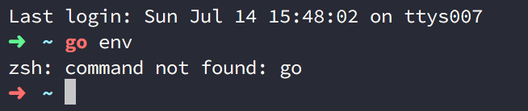
輸入 go version 或 go env (env 參數可以看到 Go 所使用的環境變數，例如 Go 被安裝到哪)，你會發現找不到該 Go 版本。
那麼如果要讓指定的版本永久作用的話要如何是好？
(5.) 指定 Go 預設使用的版本
我們可以在 gvm use 後便加上選擇性參數 --default 來告訴 GVM 這個版本被設為永久性預設的版本，當新開一個 Shell 後也會預設使用這個版本號：
$ gvm use <要指定切換的 Go 版本> --default
$ gvm use go1.14.3 --default
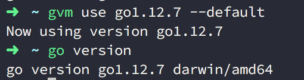
我們再次開了一個新的 Shell ，你會看到他預設指定 1.14.3 版。
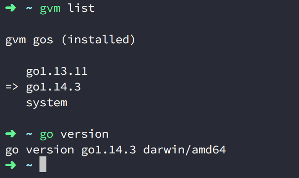
(6.) GVM 下載安裝的 Go 被放到哪裡
另外這些透過 GVM 所安裝的各個 Go 版本，會安放到哪呢？這時我們可以透過先前提到的 go env 查看與 Go 有關的環境變數：
如上圖你會看到被下載放置到 ~/.gvm/pkgsets 目錄下。
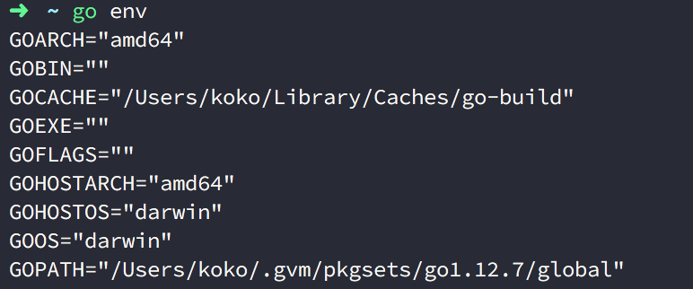
進到目錄 ~/.gvm/pkgsets 下後會看到剛剛所安裝的其他版本 Go:
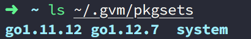
(7.) 移除指定的 Go 版本
要透過 GVM 移除 Go 很容易，只要透過以下指令：
$ gvm uninstall <要移除的版本>
(8.) 移除 GVM
如果要把 GVM 整個移除可以透過 implode 指令移除：
$ gvm implode
當透過這個指令移除 GVM 後，所有透過 GVM 所安裝的 Go 版本也會移除，因為先前提到所有透過 GVM 所安裝的 Go 都會安放在 ~/.gvm/pkgsets 目錄下。
另外如果發現 gvm implode 無法移除 GVM ，可以手動刪除 .gvm 整個目錄，並把一開始安裝時寫入到 zsh 或 bash 環境變數中的指令移除即可。
(9.) 指定預設編譯器來編譯未來新安裝的 Go 版本
前半段有提到，Go 在 1.5+ 版以後都要做編譯，因此如果不希望 Go 1.4 版後的語言每次安裝都要帶入參數 -B 可以先安裝 1.4 版本，並設定 GOROOT_BOOTSTRAP：
export GOROOT_BOOTSTRAP=$GOROOT
會需要做此動作，是因為 Go 1.4 以後實現了 Go 寫的 C 編譯器，並且為了讓後續的語言都通過該 1.4 版本的編譯器來編譯完新版本好的語言，因此需要設定，如此未來安裝 Go 時就需要再帶入 -B ，如下：
$ gvm install go1.4 -B
$ gvm use go1.4
$ export GOROOT_BOOTSTRAP=$GOROOT
$ gvm install go1.5
如下圖是安裝 1.14.3 版本的例子：
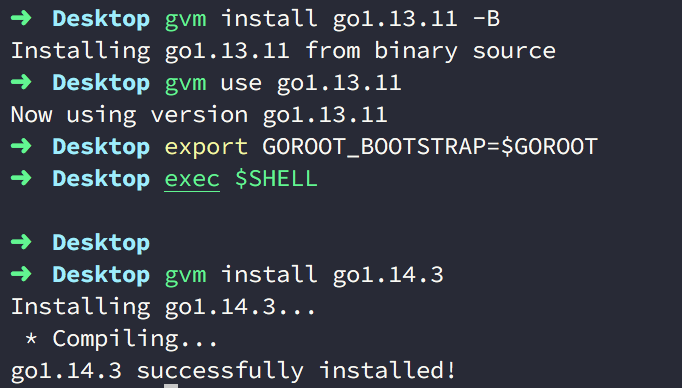
以上就是 GVM 的介紹囉。